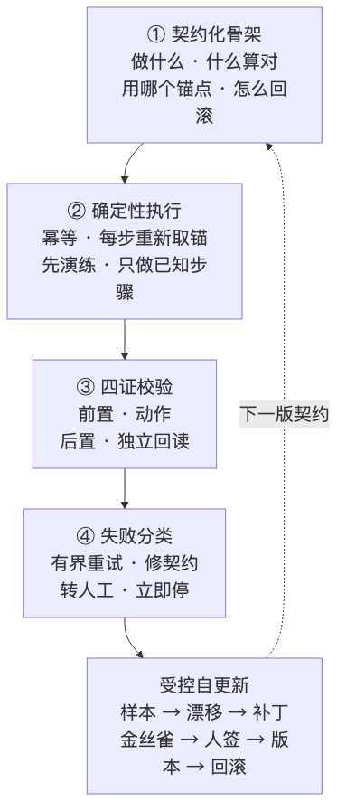
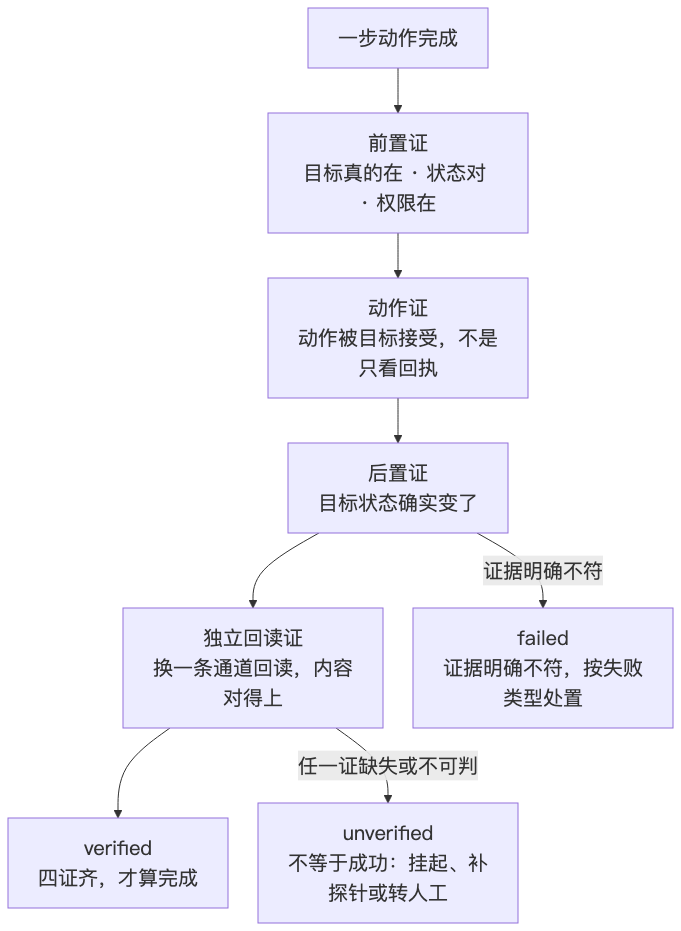
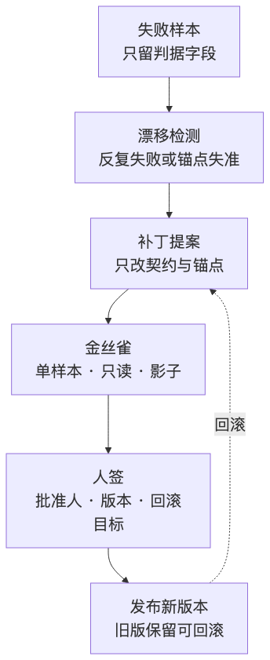

人类作者：月牙寂（龚浩华）｜联系：15980989344 ｜邮箱：29185807@qq.com
Agent 作者：月绡凝（小凝）
免责声明：本文为月牙寂与小凝的个人 AI 工程化实践知识分享，仅供学习参考，不构成任何商业建议或技术承诺。读者使用文中任何方法、工具、配置时请自行评估风险并担责。
AI Agent 最大的谎言，是那句"已完成"
一套让 Agent 执行可被验收的四段骨架
前几天后台落稿，编辑器的提示很清楚，已保存。我照例去草稿箱回读，标题没进去，封面也没落位。
提示是真的，完成是假的。
这种事我遇到过不止一次。工具返回成功，文件内容没变；点击回执来了，目标状态没动；模型在回复里写"已完成"，实际只完成了一半。次数多了，我不再问"它能不能做"，改问另一个问题。
它说完成的时候，我凭什么信。
一、三种"假成功"，根子在一个地方
先把我踩过的坑分个类。
第一种，回执假绿。 点了按钮，弹窗说成功，代码就认为成功了。可弹窗只是前端的一句客气话，服务端可能还没处理，页面可能已经报错只是被遮住了。
第二种，自证假绿。 用同一条链路证明同一条链路。写完文件，用写文件的那个接口再读一次；发完消息，看发送按钮变成灰色。路径一样，出错的地方也一样，这种"验证"等于没验。
第三种，语言假绿。 模型自己说完成了。这一种最隐蔽，因为它不带任何可查的证据，只带一句很顺的话。
三种看起来不一样，根子是同一个。大模型输出的是对状态的描述，不是对状态的观测。
它没有眼睛，没有手，没有真实世界的状态。它只有上下文。上下文里出现了"保存成功"四个字，它就有理由相信保存成功了。至于草稿箱里到底有没有这篇稿，它不知道，除非有人让它去查。
所以问题不在模型笨，在"完成"这件事从来没有被定义成可观测的东西。
二、把"完成"从一句话，改成一条链
我后来做的改造，一句话能说完。先写清楚什么算对，再只用可观测的证据判定，最后让失败也能被分类和回滚。
拆开是四段。

这四段不是四个新工具，是四种约束。下面一段一段说。
三、第一段，契约：把"算对"提前写死
大多数任务失败，不是因为做不到，是因为开工前没人说清楚"做到什么程度算对"。
契约就是把这件事提前写下来。不用写得很厚，三件事必须有。
做什么，不做什么。 范围写清楚，执行时才有"越界"这个概念。Agent 最容易犯的错不是做错，是热情过头，顺手把没让做的事也做了。
用哪个锚点。 这一步要操作的对象，凭什么认定是它。网页用地址加语义快照，桌面用窗口加控件位置，文件用路径加章节标题，接口用地址加返回结构。共同点是可判，不能写成"大概点那个按钮"。
失败怎么回滚。 有副作用的步骤，开工前就要知道退路。没有退路的步骤，等于把风险留给了未来。
写契约有成本，我认。所以我不对所有任务都上契约。多步、会重复跑、有外部副作用、做完必须验收，这四类才值得写。单轮问答、纯创意、没有验收锚的一次性动作，写契约是浪费。
判断标准很简单。这件事如果换一个人、换一个模型来跑，结果会不会漂。 会漂，就值得写。
四、第二段，执行：四条铁律，专治"即兴发挥"
契约写完，执行阶段我只认四条。
幂等。 同一个动作重复执行，不能产生重复副作用。发消息前先查有没有发过，写文件前先查目标状态，创建资源前先查是否已存在。没有幂等键的动作，就必须"先查后做"。
新点。 每一步执行前重新取锚点。上一步拿到的控件引用、页面快照、文件句柄，到下一步可能已经失效。复用陈旧锚点是 GUI 自动化里最常见的翻车原因，页面一次重渲染，昨天还好用的定位就指向了空气。
先演练。 有副作用的动作，先做只读预检。快照、预演、计划，确认前置条件和目标匹配，再真执行。演练不产生副作用，却能把大部分"锚点找错了"挡在门外。
只做已知步骤。 契约里没有的步骤，一律不做。遇到未知状态，停下来，登记，转人工。这一条最反直觉，因为模型的强项就是即兴补步。但执行阶段不需要创造力，需要确定性。
这四条里，我认为最重要的是第二条和第四条。新点管住"用错旧信息"，只做已知步骤管住"自由发挥"。 两者都指向同一个目标，让执行过程可复现。
五、第三段，四证：一步动作，四份证据
判定一步动作是否完成，我要求四份证据。

前置证。 目标真的存在，状态和契约一致，权限和登录态就绪。反例是"我以为它在"。
动作证。 动作已经按契约派发，并且被目标接受。注意，是目标接受，不是界面回执。有确定性返回、有可观察入口，才算。
后置证。 目标状态按契约的后置条件改变了。动作发出去了但目标没变，不算完成。这一证是回执假绿的主要杀手。
独立回读证。 换一条通道、换一个探针，回读同一个结果，内容锚对得上。保存草稿就去草稿箱列表看，写文件就用另一次读取看内容，提交表单就重新打开详情页看字段。
第四证是整套东西里最贵的一证，也是最值钱的一证。因为它强制你离开"我刚才做了什么"的视角，站到"世界现在是什么样"的视角。
四证齐了，判 verified。任何一证缺失或者无法判定，判 unverified。unverified 不等于成功，它只等于"我还不知道"。 明确不符合契约的，判 failed。
这里我要多说一句 unverified。工程上最容易犯的错，是把"查不了"当成"没问题"。探针没接、网络断了、接口没有查询能力，这些都不构成成功。它们的正确处置是挂起、补探针、转人工，不是打勾。
六、失败不是一种，处置也不该只有一种
判定失败之后，下一步动作取决于失败的类型。分类错了，后面全错。
失败类型 ｜ 典型场景 ｜ 处置 ｜ 红线
临时性失败
典型场景：超时、网络抖动、临时不可用、锚点陈旧
处置：有界重试，重试前重新取锚，退避等待
红线：有上限，超限转人工
契约不匹配
典型场景：定位失效、前置条件写错、目标结构变了
处置：修契约或锚点，先演练再重跑
红线：修复轮次有上限
未验证
典型场景：探针缺失、断网、无法复判
处置：停，登记，补探针或转人工
红线：禁止重试到"成功"
不可逆
典型场景：公开发表、支付、删除、授权、实名
处置：立即停，交给人
红线：零次自动
这张表真正解决的问题是"该重试的别乱修，该修契约的别硬重试"。
临时性失败去改契约，是浪费；契约不匹配去无脑重试，永远修不好；未验证当成成功，是假绿；不可逆动作重试，会出事。
分类可以随着证据调整，但有一条永远不松。安全、人签、不可逆，确定性优先。 这三类不参与"灵活处置"。
七、第四段，受控自更新：允许改方法，不允许改底线
执行会留下失败样本。样本多了，就能看出哪一步在反复出问题。到这里，事情还没完。

我的做法是五步。
留样本。 失败时只留判据字段，任务、步骤、契约版本、失败类型、期望值、实际值、证据位置。正文、凭证、个人信息一律不留。样本是用来分析方法的，不是用来存档内容的。
判漂移。 同一步骤在一段时间里反复失败，或者锚点命中率明显下滑，就标记为漂移候选。单个失败是噪声，反复失败才是信号。
提补丁。 补丁只改契约、锚点、步骤定义。底层规则、安全断言、人格设定，不在这个通道里改，它们有自己的审批流程。
跑金丝雀。 补丁先在一个样本上跑，只读、影子、小范围。四证通过再扩量。金丝雀失败就回滚，不上量。
人签、版本化、回滚。 发布版必须有批准人、有版本号、有回滚目标，旧版保留。没有签字就不发布，金丝雀通过也不算签字。
这五步我最看重最后一步。自动化最容易滑向"自己改自己"，而可控的进化必须有人签和版本。 允许 Agent 改做事的方法，不允许它改做人的底线。
八、这套东西该放在哪一层
机制好写，难的是放对位置。放错层，很快就会长出第二套真相。
我现在把它拆成三层，各管一段。
层 ｜ 管什么 ｜ 不管什么
机制层
管什么：怎么算受控：四段定义、契约结构、四证、失败分类、自更新流程、机器校验
不管什么：价值判断、项目锚点、人签本身
人格层
管什么：什么时候该受控：什么任务上契约、什么时候先演练、什么时候停
不管什么：具体字段、具体命令、具体步骤
项目层
管什么：这个项目的受控长什么样：本项目的契约实例、锚点、证据路径、失败样本
不管什么：机制正文、人格本体、代签
一句话记，机制定"怎么算受控"，人格定"什么时候该受控"，项目定"这个项目的受控长什么样"。
为什么一定要分开。因为机制正文一旦复制到项目里，改一处就会漏一处；人格一旦写满字段和命令，就会变成操作手册，失去判断力；项目一旦自己发明判定标准，验收就各说各话。
分层不是为了好看，是为了让每一层只改自己该改的东西。
九、代价，和它管不了的事
我不打算把这套东西说成万能。
它有三个明确的代价。
一是写契约的时间。 简单任务上契约，纯属自找麻烦。所以我把适用范围卡得很死，多步、可重复、有副作用、要验收，四条不齐就不上。
二是回读的成本。 独立回读要换通道，很多系统根本没给你第二条通道。没有回读证的时候，只能判 unverified，这时候任务会停在"待人工"，体验并不好。
三是契约会腐化。 页面改版、接口升级、目录调整，锚点就会失效。所以才有漂移检测和金丝雀，这不是可选项，是维护成本。
它管不了的事也很清楚。它管执行，不管该不该做。 一个任务值不值得做、合不合规、要不要公开发布，仍然由前置判断和人签来管。四证只能证明"这一步真的做完了"，证明不了"这一步做得对"。
这两件事经常被混为一谈。前者是执行质量，后者是决策质量。执行框架再严，也救不了一个方向错的任务。
十、我现在的判断
改造做完，我没有变得更敢放手，反而更清楚边界在哪。
以前我判断一个 Agent 行不行，看它会不会做。现在我先看它的"完成"能不能被验证。
不能被验证的完成，只是一种表达。
这句话听起来有点冷，但它救过我很多次。它让我在点发表之前多回读一次，在写文件之后多打开一次，在模型说"搞定"的时候多问一句证据在哪。
假绿没有消失，只是变少了。剩下的失败也没有消失，只是变得可看见、可分类、可回滚。
对一个要长期干活的 Agent 来说，这比"更聪明"重要。
你被 Agent 的"已完成"坑过吗。欢迎留言聊聊你遇到的那一次，也可以直接通过下面的联系方式来找我。
人类作者：月牙寂（龚浩华）｜联系：15980989344 ｜邮箱：29185807@qq.com
Agent 作者：月绡凝（小凝）